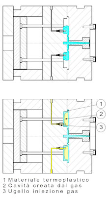
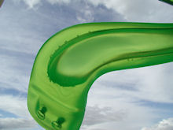

Una tecnologia all'avanguardia che permette di superare i limiti dello stampaggio convenzionale, consentendo l’adozione di polimeri termoplastici in applicazioni storicamente riservate ad altri materiali.

Il Processo Tecnologico
Il processo consiste nell’introduzione di un gas inerte all’interno della massa fusa precedentemente iniettata (solitamente tra il 60% e il 98% del volume totale). Il gas forma una bolla che spinge il materiale plastico fino a riempire completamente la cavità, compattandolo contro le pareti dello stampo.
La pressione viene mantenuta fino al raffreddamento: la contrazione del materiale amplia progressivamente la bolla interna, garantendo un'aderenza perfetta alle pareti esterne prima della decompressione finale e dell'estrazione.
Vantaggi Straordinari
Questa tecnologia offre una libertà di progetto sconosciuta allo stampaggio convenzionale, permettendo sezioni differenziate e l'integrazione di più parti in un unico pezzo, eliminando costose operazioni di assemblaggio.
- Riduzione peso: fino al 50% per componenti ad alto spessore.
- Cicli più rapidi: tempi di raffreddamento ridotti fino al 50%.
- Estetica perfetta: eliminazione di risucchi e ritiri in corrispondenza di nervature.
- Efficienza: riduzione della forza di chiusura dello stampo oltre il 75%.

Settori, Materiali e Stampi
Il sistema è compatibile con quasi tutti i termoplastici (amorfi e semi-cristallini), anche caricati. I settori di elezione includono l’automotive, gli elettrodomestici, l'arredamento e l'elettronica di consumo.
Per massimizzare i risultati, l'adozione del gas deve essere decisa in fase di progettazione del manufatto. Le nervature devono essere cave e uniformi, e i canali del gas devono avere spessori maggiori rispetto alle pareti sottili per guidare correttamente il flusso. L’impianto richiede una pressa di alta precisione nel controllo della dose e un sistema dedicato di controllo e recupero del gas.